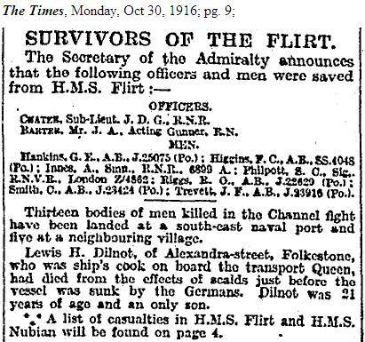

For our second portfolio project, we were asked to create a project inspired by the theme “The Bones of Our Past”. Initially, I wanted to create something that was personalized to my family and ancestry. I brainstormed with my Dad and we decided it would be neat to create a digital narrative of the ship that my Great-Grandfather fought on during the First World War. My Great Grandfather, John Douglas Chater, was deployed on a ship called HMS Flirt. On the 27th of October, 1916, while the ship was attempting to stop the Germans from advancing further into the seas of Dover, the crew came across a wreckage where another British ship had been mined. My Great-Grandfather and 2 other men hopped into a safety boat to rescue some of the survivors out of the freezing Atlantic. While they were in the water, HMS flirt was torpedoed by Germans. The ship went down in 8 minutes and John Chater along with 5 other men were the only survivors out of the 60 person crew.
The information that I found on HMS Flirt was not sufficient enough to support an entire project, so I thought it would be best to broaden my topic. I decided to research ship wreckages in England that are from the First World War. Due to the fact that there are hundreds of wreckages, for the sake of this project, I narrowed it down to the WW1 warships of Dover that sunk between the years of 1914-1918. Even more specifically, the ships that are frequently explored by and available to divers. (Note: I did not include submarines or shipwrecks that did not belong to the British Navy). This project uses a digital map to show the approximate location of 13 war-shipwrecks in the seas of Dover, as well as a brief summary of their story.
Archaeologically, I find this to be an interesting and important topic due to the fact that underwater wreckages are often overlooked as they are not visible or accessible to many. I feel that shipwrecks should be analyzed more heavily as they are the burial sites of millions of people and are a source of so much information about human past.
